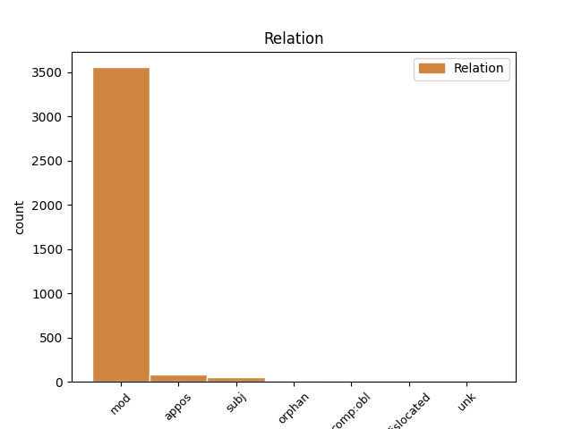
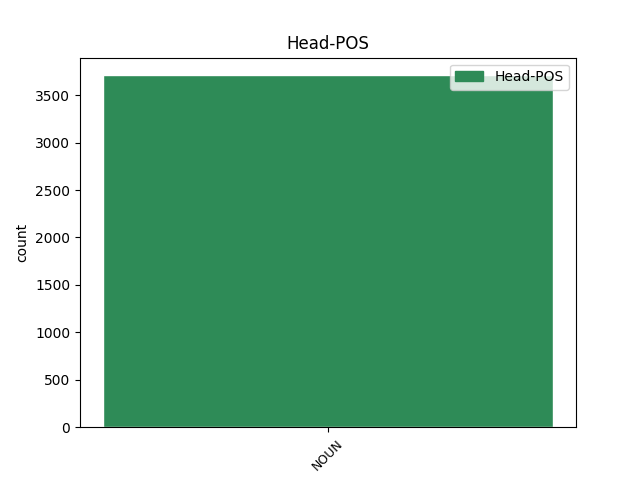
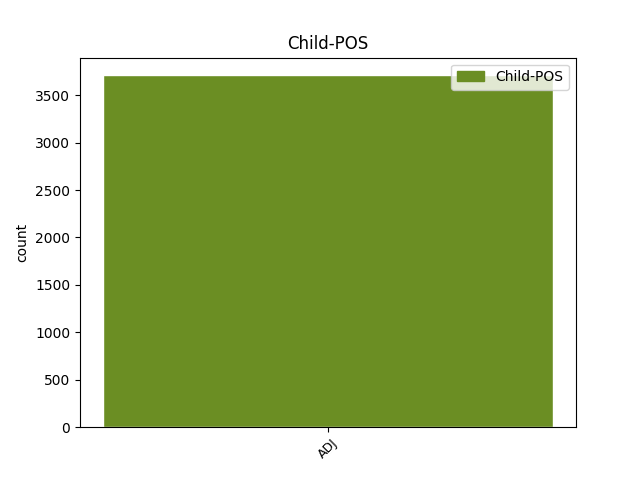

Distribution of features within this leaf



Agreement Rules sorted by frequency.
- When the dependent token is the modifer(mod) of the head token, and the head token is NOUN and the dependent token is ADJ.
1 καὶ _ _ _ _ 0 _ _ _
2 ἐάν _ _ _ _ 0 _ _ _
3 τις _ _ _ _ 0 _ _ _
4 ἀφέλῃ _ _ _ _ 0 _ _ _
5 ἀπὸ _ _ _ _ 0 _ _ _
6 τῶν _ _ _ _ 0 _ _ _
7 λόγων _ _ _ _ 0 _ _ _
8 τοῦ _ _ _ _ 0 _ _ _
9 βιβλίου _ _ _ _ 0 _ _ _
10 τῆς _ _ _ _ 0 _ _ _
11 προφητείας _ _ _ _ 0 _ _ _
12 ταύτης _ _ _ _ 0 _ _ _
13 ἀφελεῖ _ _ _ _ 0 _ _ _
14 ὁ _ _ _ _ 0 _ _ _
15 θεὸς _ _ _ _ 0 _ _ _
16 τὸ _ _ _ _ 0 _ _ _
17 μέρος _ _ _ _ 0 _ _ _
18 αὐτοῦ _ _ _ _ 0 _ _ _
19 ἀπὸ _ _ _ _ 0 _ _ _
20 τοῦ _ _ _ _ 0 _ _ _
21 ξύλου _ _ _ _ 0 _ _ _
22 τῆς _ _ _ _ 0 _ _ _
23 ζωῆς _ _ _ _ 0 _ _ _
24 καὶ _ _ _ _ 0 _ _ _
25 ἐκ _ _ _ _ 0 _ _ _
26 τῆς _ _ _ _ 0 _ _ _
27 πόλεως πόλις NOUN Nb Case=Gen|Gender=Fem|Number=Sing 0 _ _ _
28 τῆς _ _ _ _ 0 _ _ _
29 ἁγίας ἅγιος ADJ A- Case=Gen|Degree=Pos|Gender=Fem|Number=Sing 27 mod _ ref=REV_22.19
30 τῶν _ _ _ _ 0 _ _ _
31 γεγραμμένων _ _ _ _ 0 _ _ _
32 ἐν _ _ _ _ 0 _ _ _
33 τῷ _ _ _ _ 0 _ _ _
34 βιβλίῳ _ _ _ _ 0 _ _ _
35 τούτῳ _ _ _ _ 0 _ _ _
1 αἰνεῖτε _ _ _ _ 0 _ _ _
2 τῷ _ _ _ _ 0 _ _ _
3 θεῷ _ _ _ _ 0 _ _ _
4 ἡμῶν _ _ _ _ 0 _ _ _
5 πάντες _ _ _ _ 0 _ _ _
6 οἱ _ _ _ _ 0 _ _ _
7 δοῦλοι δοῦλος NOUN Nb Case=Voc|Gender=Masc|Number=Plur 0 _ _ _
8 αὐτοῦ _ _ _ _ 0 _ _ _
9 οἱ _ _ _ _ 0 _ _ _
10 φοβούμενοι _ _ _ _ 0 _ _ _
11 αὐτόν _ _ _ _ 0 _ _ _
12 οἱ _ _ _ _ 0 _ _ _
13 μικροὶ μικρός ADJ A- Case=Voc|Degree=Pos|Gender=Masc|Number=Plur 7 appos _ ref=REV_19.5
14 καὶ _ _ _ _ 0 _ _ _
15 οἱ _ _ _ _ 0 _ _ _
16 μεγάλοι _ _ _ _ 0 _ _ _
1 καὶ _ _ _ _ 0 _ _ _
2 ἡ _ _ _ _ 0 _ _ _
3 πλατεῖα πλατύς ADJ A- Case=Nom|Degree=Pos|Gender=Fem|Number=Sing 6 subj _ ref=REV_21.21
4 τῆς _ _ _ _ 0 _ _ _
5 πόλεως _ _ _ _ 0 _ _ _
6 χρυσίον χρυσίον NOUN Nb Case=Nom|Gender=Neut|Number=Sing 0 _ _ _
7 καθαρὸν _ _ _ _ 0 _ _ _
8 ὡς _ _ _ _ 0 _ _ _
9 ὕαλος _ _ _ _ 0 _ _ _
10 διαυγής _ _ _ _ 0 _ _ _
1 καὶ _ _ _ _ 0 _ _ _
2 οὓς _ _ _ _ 0 _ _ _
3 μὲν _ _ _ _ 0 _ _ _
4 ἔθετο _ _ _ _ 0 _ _ _
5 ὁ _ _ _ _ 0 _ _ _
6 θεὸς _ _ _ _ 0 _ _ _
7 ἐν _ _ _ _ 0 _ _ _
8 τῇ _ _ _ _ 0 _ _ _
9 ἐκκλησίᾳ _ _ _ _ 0 _ _ _
10 πρῶτον _ _ _ _ 0 _ _ _
11 ἀποστόλους _ _ _ _ 0 _ _ _
12 δεύτερον _ _ _ _ 0 _ _ _
13 προφήτας _ _ _ _ 0 _ _ _
14 τρίτον τρίτος ADJ Mo Case=Acc|Gender=Neut|Number=Sing 15 orphan _ ref=1COR_12.28
15 διδασκάλους διδάσκαλος NOUN Nb Case=Acc|Gender=Masc|Number=Plur 0 _ _ _
16 ἔπειτα _ _ _ _ 0 _ _ _
17 δυνάμεις _ _ _ _ 0 _ _ _
18 ἔπειτα _ _ _ _ 0 _ _ _
19 χαρίσματα _ _ _ _ 0 _ _ _
20 ἰαμάτων _ _ _ _ 0 _ _ _
21 ἀντιλήμψεις _ _ _ _ 0 _ _ _
22 κυβερνήσεις _ _ _ _ 0 _ _ _
23 γένη _ _ _ _ 0 _ _ _
24 γλωσσῶν _ _ _ _ 0 _ _ _
1 μετὰ _ _ _ _ 0 _ _ _
2 δὲ _ _ _ _ 0 _ _ _
3 ἵππος ἵππος NOUN Nb Case=Nom|Gender=Fem|Number=Sing 0 _ _ _
4 ἄλλη ἄλλος ADJ A- Case=Nom|Degree=Pos|Gender=Fem|Number=Sing 3 dislocated _ ref=7.41.1
5 χιλίη _ _ _ _ 0 _ _ _
6 ἐκ _ _ _ _ 0 _ _ _
7 Περσέων _ _ _ _ 0 _ _ _
8 ἀπολελεγμένη _ _ _ _ 0 _ _ _
1 τοῖς _ _ _ _ 0 _ _ _
2 δὲ _ _ _ _ 0 _ _ _
3 δειλοῖς δειλός ADJ A- Case=Dat|Degree=Pos|Gender=Masc|Number=Plur 25 comp:obl _ ref=REV_21.8
4 καὶ _ _ _ _ 0 _ _ _
5 ἀπίστοις _ _ _ _ 0 _ _ _
6 καὶ _ _ _ _ 0 _ _ _
7 ἐβδελυγμένοις _ _ _ _ 0 _ _ _
8 καὶ _ _ _ _ 0 _ _ _
9 φονεῦσιν _ _ _ _ 0 _ _ _
10 καὶ _ _ _ _ 0 _ _ _
11 πόρνοις _ _ _ _ 0 _ _ _
12 καὶ _ _ _ _ 0 _ _ _
13 φαρμάκοις _ _ _ _ 0 _ _ _
14 καὶ _ _ _ _ 0 _ _ _
15 εἰδωλολάτραις _ _ _ _ 0 _ _ _
16 καὶ _ _ _ _ 0 _ _ _
17 πᾶσιν _ _ _ _ 0 _ _ _
18 τοῖς _ _ _ _ 0 _ _ _
19 ψευδέσιν _ _ _ _ 0 _ _ _
20 τὸ _ _ _ _ 0 _ _ _
21 μέρος _ _ _ _ 0 _ _ _
22 αὐτῶν _ _ _ _ 0 _ _ _
23 ἐν _ _ _ _ 0 _ _ _
24 τῇ _ _ _ _ 0 _ _ _
25 λίμνῃ λίμνη NOUN Nb Case=Dat|Gender=Fem|Number=Sing 0 _ _ _
26 τῇ _ _ _ _ 0 _ _ _
27 καιομένῃ _ _ _ _ 0 _ _ _
28 πυρὶ _ _ _ _ 0 _ _ _
29 καὶ _ _ _ _ 0 _ _ _
30 θείῳ _ _ _ _ 0 _ _ _
31 ὅ _ _ _ _ 0 _ _ _
32 ἐστιν _ _ _ _ 0 _ _ _
33 ὁ _ _ _ _ 0 _ _ _
34 θάνατος _ _ _ _ 0 _ _ _
35 ὁ _ _ _ _ 0 _ _ _
36 δεύτερος _ _ _ _ 0 _ _ _
Disagree Examples:
1 Ἡροδότου _ _ _ _ 0 _ _ _
2 Ἁλικαρνησσέος _ _ _ _ 0 _ _ _
3 ἱστορίης ἱστορία NOUN Nb Case=Gen|Gender=Fem|Number=Sing 0 _ _ _
4 ἀπόδεξις _ _ _ _ 0 _ _ _
5 ἥδε _ _ _ _ 0 _ _ _
6 ὡς _ _ _ _ 0 _ _ _
7 μήτε _ _ _ _ 0 _ _ _
8 τὰ _ _ _ _ 0 _ _ _
9 γενόμενα _ _ _ _ 0 _ _ _
10 ἐξ _ _ _ _ 0 _ _ _
11 ἀνθρώπων _ _ _ _ 0 _ _ _
12 τῷ _ _ _ _ 0 _ _ _
13 χρόνῳ _ _ _ _ 0 _ _ _
14 ἐξίτηλα _ _ _ _ 0 _ _ _
15 γένηται _ _ _ _ 0 _ _ _
16 μήτε _ _ _ _ 0 _ _ _
17 ἔργα _ _ _ _ 0 _ _ _
18 μεγάλα _ _ _ _ 0 _ _ _
19 τε _ _ _ _ 0 _ _ _
20 καὶ _ _ _ _ 0 _ _ _
21 θωμαστά _ _ _ _ 0 _ _ _
22 τὰ _ _ _ _ 0 _ _ _
23 μὲν _ _ _ _ 0 _ _ _
24 Ἕλλησι _ _ _ _ 0 _ _ _
25 τὰ _ _ _ _ 0 _ _ _
26 δὲ _ _ _ _ 0 _ _ _
27 βαρβάροισι _ _ _ _ 0 _ _ _
28 ἀποδεχθέντα _ _ _ _ 0 _ _ _
29 ἀκλεᾶ _ _ _ _ 0 _ _ _
30 γένηται _ _ _ _ 0 _ _ _
31 τά _ _ _ _ 0 _ _ _
32 τε _ _ _ _ 0 _ _ _
33 ἄλλα ἄλλος ADJ Px Case=Nom|Gender=Neut|Number=Plur 3 appos _ ref=1.1.0
34 καὶ _ _ _ _ 0 _ _ _
35 δι’ _ _ _ _ 0 _ _ _
36 ἣν _ _ _ _ 0 _ _ _
37 αἰτίην _ _ _ _ 0 _ _ _
38 ἐπολέμησαν _ _ _ _ 0 _ _ _
39 ἀλλήλοισι _ _ _ _ 0 _ _ _
1 τὸ _ _ _ _ 0 _ _ _
2 γὰρ _ _ _ _ 0 _ _ _
3 Κιμμερίων Κιμμέριοι ADJ A- Case=Gen|Degree=Pos|Gender=Masc|Number=Plur 4 mod _ ref=1.6.3
4 στράτευμα στράτευμα NOUN Nb Case=Nom|Gender=Neut|Number=Sing 0 _ _ _
5 τὸ _ _ _ _ 0 _ _ _
6 ἐπὶ _ _ _ _ 0 _ _ _
7 τὴν _ _ _ _ 0 _ _ _
8 Ἰωνίην _ _ _ _ 0 _ _ _
9 ἀπικόμενον _ _ _ _ 0 _ _ _
10 Κροίσου _ _ _ _ 0 _ _ _
11 ἐὸν _ _ _ _ 0 _ _ _
12 πρεσβύτερον _ _ _ _ 0 _ _ _
13 οὐ _ _ _ _ 0 _ _ _
14 καταστροφὴ _ _ _ _ 0 _ _ _
15 ἐγένετο _ _ _ _ 0 _ _ _
16 τῶν _ _ _ _ 0 _ _ _
17 πολίων _ _ _ _ 0 _ _ _
18 ἀλλ’ _ _ _ _ 0 _ _ _
19 ἐξ _ _ _ _ 0 _ _ _
20 ἐπιδρομῆς _ _ _ _ 0 _ _ _
21 ἁρπαγή _ _ _ _ 0 _ _ _
1 γενομένης _ _ _ _ 0 _ _ _
2 γὰρ _ _ _ _ 0 _ _ _
3 Ἀθηναίοισι _ _ _ _ 0 _ _ _
4 μάχης _ _ _ _ 0 _ _ _
5 πρὸς _ _ _ _ 0 _ _ _
6 τοὺς _ _ _ _ 0 _ _ _
7 ἀστυγείτονας _ _ _ _ 0 _ _ _
8 ἐν _ _ _ _ 0 _ _ _
9 Ἐλευσῖνι _ _ _ _ 0 _ _ _
10 βοηθήσας _ _ _ _ 0 _ _ _
11 καὶ _ _ _ _ 0 _ _ _
12 τροπὴν τροπή NOUN Nb Case=Acc|Gender=Fem|Number=Sing 0 _ _ _
13 ποιήσας _ _ _ _ 0 _ _ _
14 τῶν _ _ _ _ 0 _ _ _
15 πολεμίων πολέμιος ADJ A- Case=Gen|Degree=Pos|Gender=Masc|Number=Plur 12 mod _ ref=1.30.5
16 ἀπέθανε _ _ _ _ 0 _ _ _
17 κάλλιστα _ _ _ _ 0 _ _ _
1 αὐτίκα _ _ _ _ 0 _ _ _
2 δέ _ _ _ _ 0 _ _ _
3 οἱ _ _ _ _ 0 _ _ _
4 εὕδοντι _ _ _ _ 0 _ _ _
5 ἐπέστη _ _ _ _ 0 _ _ _
6 ὄνειρος _ _ _ _ 0 _ _ _
7 ὅς _ _ _ _ 0 _ _ _
8 οἱ _ _ _ _ 0 _ _ _
9 τὴν _ _ _ _ 0 _ _ _
10 ἀληθείην ἀλήθεια NOUN Nb Case=Acc|Gender=Fem|Number=Sing 0 _ _ _
11 ἔφαινε _ _ _ _ 0 _ _ _
12 τῶν _ _ _ _ 0 _ _ _
13 μελλόντων _ _ _ _ 0 _ _ _
14 γενέσθαι _ _ _ _ 0 _ _ _
15 κακῶν κακός ADJ A- Case=Gen|Degree=Pos|Gender=Neut|Number=Plur 10 mod _ ref=1.34.1
16 κατὰ _ _ _ _ 0 _ _ _
17 τὸν _ _ _ _ 0 _ _ _
18 παῖδα _ _ _ _ 0 _ _ _
1 οὗτος _ _ _ _ 0 _ _ _
2 ὁ _ _ _ _ 0 _ _ _
3 λέων _ _ _ _ 0 _ _ _
4 ἐπείτε _ _ _ _ 0 _ _ _
5 κατεκαίετο _ _ _ _ 0 _ _ _
6 ὁ _ _ _ _ 0 _ _ _
7 ἐν _ _ _ _ 0 _ _ _
8 Δελφοῖσι _ _ _ _ 0 _ _ _
9 νηός _ _ _ _ 0 _ _ _
10 κατέπεσε _ _ _ _ 0 _ _ _
11 ἀπὸ _ _ _ _ 0 _ _ _
12 τῶν _ _ _ _ 0 _ _ _
13 ἡμιπλινθίων _ _ _ _ 0 _ _ _
14 ἐπὶ _ _ _ _ 0 _ _ _
15 γὰρ _ _ _ _ 0 _ _ _
16 τούτοισι _ _ _ _ 0 _ _ _
17 ἵδρυτο _ _ _ _ 0 _ _ _
18 καὶ _ _ _ _ 0 _ _ _
19 νῦν _ _ _ _ 0 _ _ _
20 κεῖται _ _ _ _ 0 _ _ _
21 ἐν _ _ _ _ 0 _ _ _
22 τῷ _ _ _ _ 0 _ _ _
23 Κορινθίων Κορίνθιος ADJ A- Case=Gen|Degree=Pos|Gender=Masc|Number=Plur 24 mod _ ref=1.50.3
24 θησαυρῷ θησαυρός NOUN Nb Case=Dat|Gender=Masc|Number=Sing 0 _ _ _
25 ἕλκων _ _ _ _ 0 _ _ _
26 σταθμὸν _ _ _ _ 0 _ _ _
27 ἕβδομον _ _ _ _ 0 _ _ _
28 ἡμιτάλαντον _ _ _ _ 0 _ _ _